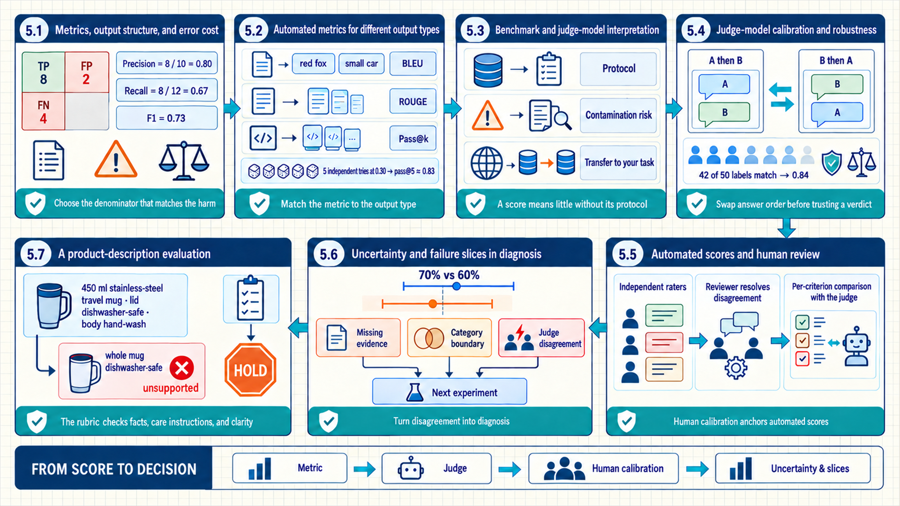
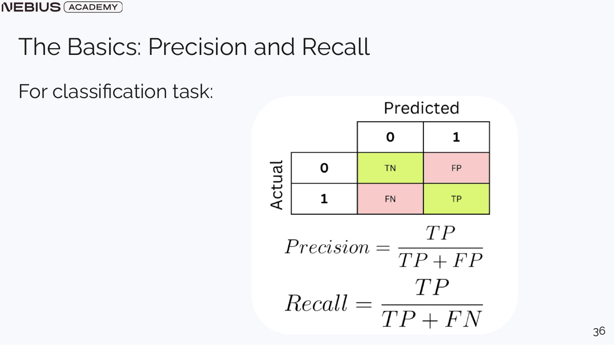
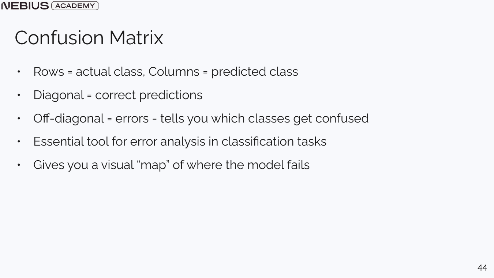
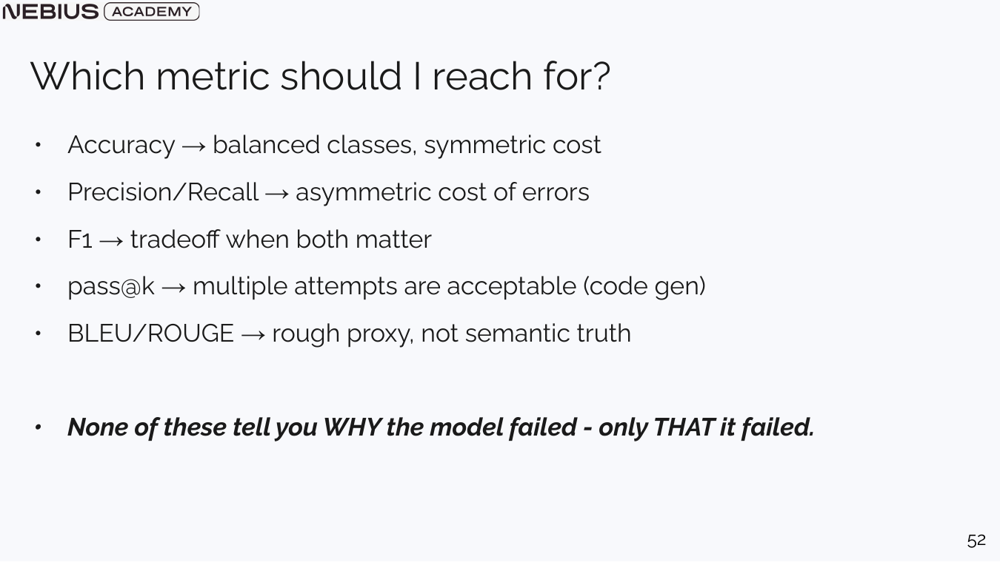
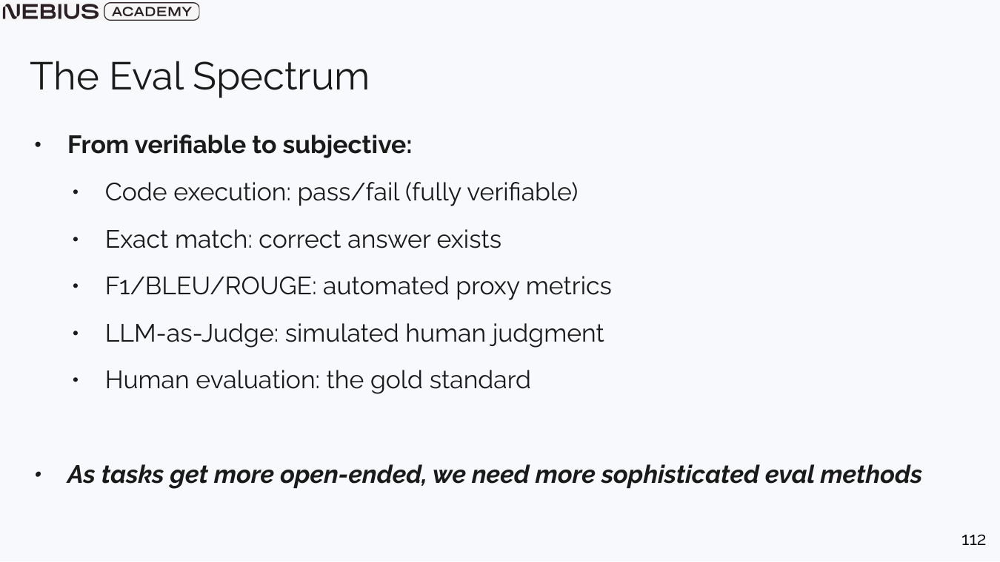
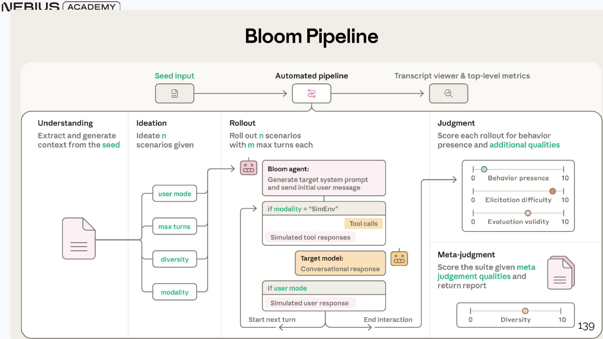
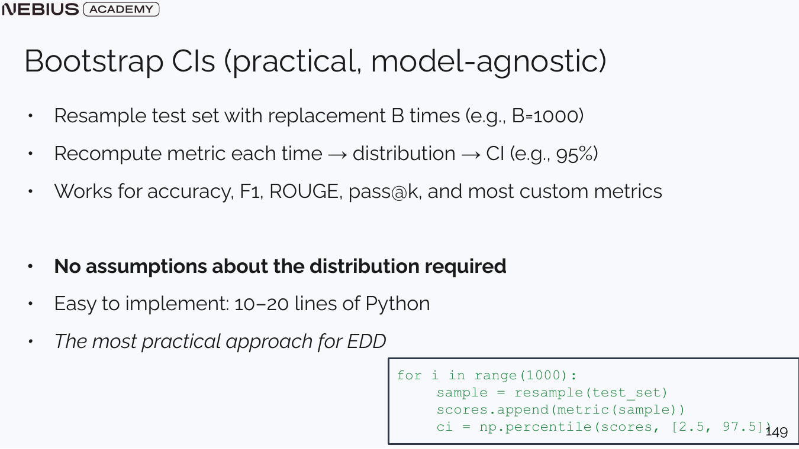
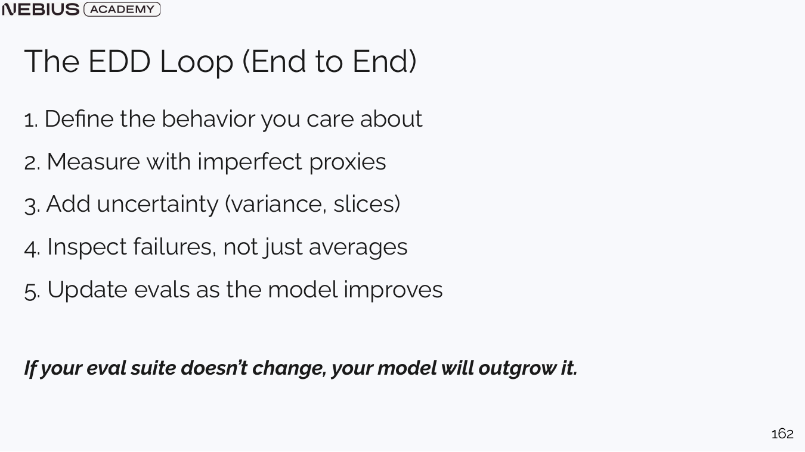

5 Measuring answer quality with metrics and judge models
Chapter 4 established the experiment before choosing the instrument that scores it. The next question is which observable quantity represents the task and how strongly its assumptions limit the conclusion. Evaluation evidence begins with deterministic classification, text, and code metrics whose assumptions match the output and error costs.

The map moves from error consequences to metric selection, then through benchmark scope, judge-model bias controls, human agreement, and failure slices, so each score answers a specific question about the product.
5.1 Metrics, output structure, and error cost
A golden set supplies labeled outcomes and product-relevant slices. Classification still requires a metric whose denominator matches the harm of false alarms and missed cases. Precision reads predicted positives, recall reads actual positives, and F1 combines the two when neither error type should dominate silently.
Precision asks how trustworthy a positive prediction is.
\[ \mathrm{Precision} = \frac{TP}{TP+FP} \tag{5.1}\]
Here, \(TP\) counts correctly predicted positives and \(FP\) counts negative cases incorrectly predicted as positive. The numerator contributes justified alerts; the denominator contains every alert the system raised. Precision is high when few raised alerts are false.
Recall asks how completely the system finds actual positives.
\[ \mathrm{Recall} = \frac{TP}{TP+FN} \tag{5.2}\]
Here, \(FN\) counts positive cases the system missed. The numerator again counts detected positives, while the denominator now contains every true positive case. Recall is high when few important cases are missed.
F1 is the harmonic mean of precision and recall.
\[ F_1 = \frac{2PR}{P+R} \tag{5.3}\]
Here, \(P\) is precision and \(R\) is recall. Multiplication and the harmonic-mean denominator force the score down when either component is small. F1 provides one balance point, but it does not express an asymmetric cost unless the task or metric is modified.
Worked calculation - escalation alerts
An evaluator contains 12 cases that truly require escalation. The system raises 10 alerts, and 8 of those alerts are correct.
- TP = 8. The two incorrect alerts give FP = 2.
- Four required escalations were missed, so FN = 4.
- Precision = 8 / (8 + 2) = 0.80.
- Recall = 8 / (8 + 4) = 0.67.
- F1 = 2 x 0.80 x 0.67 / (0.80 + 0.67) = 0.73 after rounding.
Result: The system’s alerts are usually correct, but it misses one third of required escalations.
Interpretation: If missed escalations carry larger harm, recall and the actual missed cases matter more than the balanced F1 headline.

The positive class must be stated explicitly. Reversing it changes the business meaning even when the matrix entries are unchanged.

Rows represent actual classes and columns predicted classes in this slide. Verify axis orientation because libraries do not all display matrices identically.
5.2 Automated metrics for different output types
Classification metrics work because evaluation labels define a finite set of outcomes. Open text and code can have several valid surface forms, so exact equality may reject good outputs or reward superficial overlap. Metric choice moves from verifiable execution and exact match toward text proxies only as the task requires.
Exact match is appropriate when one canonical answer or normalized identifier exists. An n-gram is a run of \(n\) neighboring tokens: in “red fox runs,” red fox is a bigram. BLEU emphasizes n-gram precision and is associated with translation. If a candidate says “a small red car” and a reference says “a red car is small,” the words overlap but only some neighboring pairs do; BLEU therefore penalizes changed word order even when the meaning is close. ROUGE emphasizes how much reference content appears in the candidate and is often used for summaries. If a five-word reference has three matching words in a short candidate, a unigram-recall view of ROUGE counts 3/5 before considering order or meaning. Both can miss semantic equivalence and can reward copying. Use them as proxies, not semantic truth.
For code, a test suite can execute a completion and grade behavior. When the system may produce several candidates, pass@k asks whether at least one succeeds. Under an idealized independent-attempt model with one-attempt success probability p, the probability of at least one success by k attempts is:
\[ P(\mathrm{success\ by\ }k) = 1-(1-p)^k \tag{5.4}\]
Here, \(p\) is single-attempt success and \(k\) is the number of independent attempts. The term \((1-p)^k\) is the chance that every attempt fails; subtracting from one gives at least one success. Real samples are correlated. Estimate pass@k from observed sample outcomes and document the dependence assumption.
Worked calculation - independent pass at five
Suppose one generated program has a 0.30 probability of passing all hidden tests and five attempts are independent.
- One attempt fails with probability 1 - 0.30 = 0.70.
- All five fail with probability 0.70⁵ = 0.16807.
- At least one succeeds with probability 1 - 0.16807 = 0.83193.
Result: The idealized pass-at-five probability is about 0.832.
Interpretation: The gain depends on diversity. Five nearly identical samples do not behave like five independent attempts, and producing five answers multiplies cost.

A metric selects evidence for one question. Error analysis and traces are still required to find the responsible product component.
Sections 5.1 and 5.2 connected output structure and error costs to classification, text, and code metrics. Open-ended behavior still needs evaluation protocols that can compare valid alternatives without treating one model opinion or public score as ground truth. Benchmark protocols establish scope, judge models apply calibrated rubrics, human review anchors disputed criteria, and failure slices turn disagreement into diagnosis.
5.3 Benchmark and judge-model interpretation
Task metrics score one evaluation set under one procedure. Public benchmarks package a dataset, metric, and protocol so model results can be compared, but their meaning changes as models and training corpora change. A useful benchmark reading separates measured capability, contamination risk, saturation, and product relevance.
Benchmarks such as MMLU, ARC, HellaSwag, GSM8K, GPQA, HumanEval, MBPP, and SWE-bench target different tasks. MMLU uses subject-area multiple-choice questions; ARC uses grade-school science questions; HellaSwag tests likely sentence continuations; GSM8K tests worked arithmetic word problems; and GPQA uses difficult science questions. HumanEval and MBPP execute small programming tasks against tests, while SWE-bench evaluates repository issue resolution. A result belongs to the exact benchmark version, prompt protocol, sampling settings, tool access, and grading environment. It should not be generalized to unrelated product tasks.
Data contamination occurs when benchmark questions, answers, patches, or close variants enter model training or evaluation-time retrieval. A contaminated model can score well without demonstrating generalization. Dynamic benchmarks such as LiveBench and LiveCodeBench use newer or frequently refreshed items to reduce, not eliminate, this risk.
Long-context tests also require interpretation. A needle-retrieval task measures whether one fact can be recovered from a long sequence; it does not establish that a model can reason over all relationships in that context. Latency, cost, safety, and robustness need separate protocols.
| Benchmark question | Evidence to record | Invalid inference to avoid |
|---|---|---|
| Which capability is measured? | Dataset domain, task format, scoring rule | The model is generally intelligent or product-ready |
| Was the protocol comparable? | Prompt, tools, samples, temperature, version | Two published scores used identical conditions |
| Could training exposure inflate results? | Release date, training cutoff, leakage analysis | A high score proves unseen generalization |
| Does the result transfer? | Product eval correlation and failure slices | Public ranking predicts private workflow performance |
A benchmark result is produced by a protocol: dataset version, prompt template, few-shot examples, decoding settings, tool access, scoring code, and model checkpoint all contribute to the number. Reproducing the score therefore requires more than naming the benchmark. Contamination and repeated tuning can further weaken its value as evidence about unseen product inputs.
Public benchmarks remain useful for broad capability screening and regression detection. Product decisions need an additional transfer step using representative local cases, failure costs, and operating constraints. Agreement between a public result and a product evaluation strengthens the conclusion; disagreement identifies a distribution or protocol difference that requires inspection.
5.4 Judge-model calibration and robustness
Verifiable tests and lexical metrics cannot grade every open-ended answer. A model judge can apply a rubric at scale, but it introduces its own preferences, nondeterminism, and exposure to candidate text. Reliable use requires a written rubric, controlled presentation, human calibration, and adversarial tests.
An LLM-as-a-judge evaluator asks a model to score or compare candidate outputs. Pairwise judging can be easier than assigning an absolute score because it asks which answer better satisfies explicit criteria. Single-answer grading can return per-criterion ratings and explanations that support error analysis.

Flexible judging becomes appropriate when cheaper objective checks cannot capture the behavior. Objective checks can remain in place for syntax, execution, citations, and final state.
- Position bias: the judge may prefer the first or second answer; an evaluation protocol can swap or randomize order.
- Verbosity bias: longer answers may appear more complete; the evaluation specification can state a target length and penalize irrelevant content explicitly.
- Self-enhancement bias: a judge may prefer outputs from its own model family; a calibration study can compare another family or human labels.
- Prompt injection: candidate text may instruct the judge to ignore the rubric; the evaluator can treat candidates as untrusted data and include attack cases.
- Rubric drift: vague criteria produce inconsistent scores; a rubric can define pass/fail anchors and include calibration examples.
Code example 5.1 - pairwise judging randomizes answer order and restores the original identity afterward.
Code example: Code example 5.1 - pairwise judging randomizes answer order and restores the original identity afterward.
import random
def judge_pair(case, answer_a, answer_b, judge, order=None):
candidates = {"A": answer_a, "B": answer_b}
display_order = tuple(order) if order is not None else tuple(
random.sample(["A", "B"], k=2)
)
if set(display_order) != {"A", "B"}:
raise ValueError("order must contain A and B exactly once")
prompt = render_rubric(
task=case.task,
evidence=case.evidence,
candidate_1=candidates[display_order[0]],
candidate_2=candidates[display_order[1]],
)
verdict = judge(prompt)
if verdict.winner_index not in (0, 1):
raise ValueError("judge returned an invalid winner_index")
return {
"selected": display_order[verdict.winner_index],
"criterion_scores": verdict.criterion_scores,
"explanation": verdict.explanation,
"rubric_version": RUBRIC_VERSION,
}This abbreviated example assumes render_rubric keeps the first and second displayed candidates separate and that judge returns a verdict with winner_index equal to 0 or 1, criterion scores, and an explanation. It returns a dictionary whose selected value is the original answer identity, not its display position. Randomization addresses order bias but not judge correctness. Compare judge labels with an audited human subset per criterion, inspect disagreements, and pin the judge model and rubric version in every result row.
Observed agreement summarizes the simplest human-judge comparison after the labels have been produced under a fixed rubric.
\[ A_o=\frac{1}{N}\sum_{i=1}^{N}\mathbb{1}(h_i=j_i) \tag{5.5}\]
Here, \(N\) is the audited case count, \(h_i\) is the human label for case \(i\), \(j_i\) is the judge label, and the indicator contributes one only when the labels match. The average reports the matching fraction. It does not adjust for agreement expected from class prevalence and therefore belongs beside a confusion matrix and per-class results.
Worked calculation - human-judge agreement
An audited sample contains 50 cases, and the human and model judge produce the same criterion label on 42.
- The indicator contributes one for each of the 42 matching rows and zero for the remaining eight.
- The sum of indicators is 42.
- Observed agreement is 42 / 50 = 0.84.
Result: The observed human-judge agreement is 84 percent.
Interpretation: The eight disagreements require inspection. A judge that always chooses the majority class can obtain high agreement while failing the rare cases that matter most.
Code example 5.2 - swapped presentations expose position-sensitive verdicts before agreement is reported.
This example reuses judge_pair from Code example 5.1, including its rubric renderer and model response format. Each call returns a dictionary with the selected candidate’s original identity, so the comparison remains meaningful when the display order changes.
Code example: Code example 5.2 - swapped presentations expose position-sensitive verdicts before agreement is reported.
def judge_with_position_swap(case, answer_a, answer_b, judge):
first = judge_pair(case, answer_a, answer_b, judge, order=("A", "B"))
second = judge_pair(case, answer_a, answer_b, judge, order=("B", "A"))
consistent = first["selected"] == second["selected"]
return {
"selected_if_ab": first["selected"],
"selected_if_ba": second["selected"],
"position_consistent": consistent,
"final_label": first["selected"] if consistent else "human_review",
}
def observed_agreement(human_labels, judge_labels):
if not human_labels or len(human_labels) != len(judge_labels):
raise ValueError("label lists must be non-empty and equally long")
matches = sum(h == j for h, j in zip(human_labels, judge_labels))
return matches / len(human_labels)The two presentations are separate judge calls over the same task and candidates: the first displays A then B, and the second displays B then A. A changed returned selected identity is evidence of position sensitivity and should not be hidden by choosing the favorable order. The function returns the two identities, a consistency flag, and human_review when they differ. Observed agreement then compares the final judge label with human labels, while a confusion matrix shows which criteria or classes produce disagreement. Agreement does not establish that either label source is correct, especially under severe class imbalance.
5.5 Automated scores and human review
A calibrated model judge extends coverage for open-ended outputs. Some judgments still require domain expertise, and some behaviors must be discovered before a fixed rubric can score them. Human review anchors quality while scalable pipelines generate, run, and summarize larger behavioral test families.
Human evaluation remains the reference for nuanced usefulness, domain correctness, and policy interpretation, but it is expensive and subject to disagreement. Give raters the same written criteria, randomize presentation where possible, collect multiple ratings for ambiguous tasks, and record disagreement explicitly.
Anthropic’s Bloom is a scalable behavioral-evaluation pipeline. It turns a seed behavior into diverse evaluation scenarios, runs them, and uses a judge or meta-judge to summarize behavior-level results. The value lies in expanding coverage systematically; the generated scenarios and judge still require validation.

A scalable pipeline can increase the number of evaluated behaviors, but each stage adds assumptions. Preserve the seed, scenario generator, model versions, transcripts, and judge configuration.
Human calibration
Human calibration uses a stratified subset of outputs and the criteria a model judge will apply at scale. It is useful when the task is open-ended, high-impact, domain-specific, or vulnerable to judge bias.
Independent raters score the subset, adjudicators inspect disagreements, and the team compares per-criterion judge agreement before revising rubric anchors. Calibration turns a model judge from an untested opinion into a measured proxy with known disagreement patterns.
A limit to keep in mind: A small or homogeneous rater group can encode shared bias; low agreement may indicate the task itself is underspecified.
Human evaluation is strongest when domain judgment, user value, or policy interpretation cannot be reduced to a deterministic rule. The protocol defines rater qualification, rubric anchors, randomization, blinding, sample allocation, and disagreement handling. Inter-rater agreement is diagnostic. Low agreement can reveal an unclear rubric, a genuinely ambiguous task, or inconsistent model behavior.
Scalable behavioral evaluation can expand coverage by generating scenarios, running many trials, and applying calibrated judge models. Human review remains the reference for newly discovered behaviors and high-impact slices. A hybrid design uses automated checks for objective properties, judge models for repeatable subjective screening, and human adjudication for calibration and contested cases.
5.6 Uncertainty and failure slices in diagnosis
Metrics and judge models produce sample scores on a finite evaluation set. A difference such as 70 percent versus 60 percent may come from sampled cases or stochastic trial variation. Confidence intervals, repeated runs, and slice-level error analysis show whether the observed delta is stable and useful.
Chapter 4 introduced bootstrap intervals as part of experiment design. Here the interval is interpreted with the metric’s own assumptions: a narrow interval around a weak proxy still does not establish user value, and an aggregate interval can conceal a critical slice regression.

Publish the interval with sample size, protocol, model version, and slice results. A narrow interval around a biased proxy is still misleading.
Error analysis groups failures by an actionable cause: missing evidence, misunderstood instruction, wrong category boundary, output truncation, judge disagreement, policy conflict, or tool failure. Each bucket should point to the owning system component and a proposed next experiment.
| Failure bucket | Evidence to inspect | Next controlled change |
|---|---|---|
| Task ambiguity | Rater disagreement and prompt text | Success-criteria clarification or task split |
| Context omission | Serialized request and selected evidence IDs | Repair retrieval or context policy |
| Model reasoning or generation | Same context across checkpoints | Model or prompt comparison with evidence fixed |
| Validator or grader error | Raw output, parsed fields, hidden tests, judge rationale | Correct the evaluator before tuning the system |
| Slice regression | Per-slice delta and representative failures | Additional cases and subgroup-visible optimization |

The eval suite changes when new model behavior or production failures reveal a missing case. Stability means reproducible decision logic, not a frozen dataset forever.
5.7 A product-description evaluation
EDD has supplied the task specification, scoring methods, calibration, uncertainty, and failure analysis. A product-description evaluation shows how those pieces combine when quality has no single reference answer. The implementation trace follows rubric definition, generation, cost, human labels, improvement, judge calibration, and full comparison.
The example begins with criterion-level descriptions and a cumulative pass bar. Two named generation models then produce descriptions for every product while the application records token use and latency. A sampled subset receives cost calculations and manual criterion labels. One prompt or model hypothesis changes at a time, after which a structured judge is calibrated and its criterion-level decisions are compared with human labels.
A reproducible evaluation preserves four concrete records: the rubric and pass rule, the executable prompts and model calls, row-level manual and automated scores, and the experiment log. A prose conclusion without the configuration and per-example evidence cannot show whether an apparent improvement came from the model, prompt, evaluator, or changed data.
Code example 5.3 - a row-level evaluation record shows where each generation and judgment came from.
Code example: Code example 5.3 - a row-level evaluation record shows where each generation and judgment came from.
record = {
"product_id": product_id,
"input_text": product_text,
"generation_model": generation_model,
"prompt_version": prompt_version,
"generated_description": description,
"input_tokens": usage.input_tokens,
"output_tokens": usage.output_tokens,
"estimated_cost_usd": estimate_cost(usage, prices),
"human_labels": human_labels,
"judge_model": judge_model,
"judge_rubric_version": rubric_version,
"judge_labels": judge_labels,
"judge_explanations": judge_explanations,
}The generation model and judge model have different roles and must be recorded separately. Per-criterion comparison is more informative than one final agreement score because a judge may be reliable on clarity but poor on factual support. The improvement cycle is valid only when the rubric and test rows remain fixed or their changes are documented.
Chapter checkpoint
Evaluation distinguishes a system improvement from a persuasive anecdote. Chapters 6 and 7 apply the same discipline to retrieval: first identify whether the right evidence was found, then whether generation used it correctly.